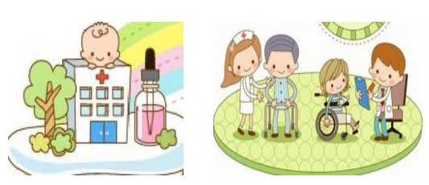

科室介绍
中医妇儿科为中医内科二级特色科室，坚持以整体观念为指导、辨证论治为核心的基础上，根据妇女生理、病理特点，运用补肾、健脾、疏肝和调理气血诸法，治疗不孕症、盆腔炎、附件炎、先兆流产、痛经、闭经、功能性子宫出血、多囊卵巢综合征、子宫内膜异位症等取得较好的疗效。如运用中药熏洗法，治疗外阴瘙痒、湿疹、肿胀等；中药外敷法治疗急性乳腺炎、回乳等；中药保留灌肠治疗慢性盆腔炎、腹部肿块等，大大提高了疗效。中医儿科通过中医推拿，中医药毒副作用少的优势，特别是对小儿咳喘、腹泻、消化不良、疳积、厌食、小儿抽动症及提高免疫功能有较明确的疗效。
